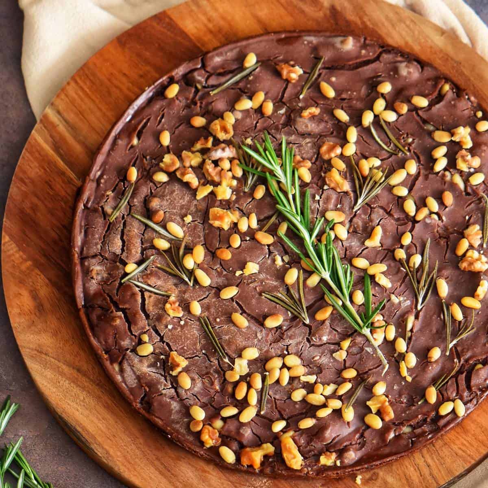

Castagnaccio

Castagnaccio is an ancient recipe, a dessert that speaks to the Tuscan peasant woman is triumph over poverty and hunger.
The simplest version involves a basic mix of chestnut flour, water, oil and rosemary, resulting in a cake with an almost
biting, smoky flavour and a texture similar to bread pudding. And yet castagnaccio is in some ways a surprisingly modern dessert.
It contains no sugar and is naturally gluten and lactose-free. More elaborate versions call for dried fruit and raisins to be added
along with its fundamental ingredient, of course: chestnut flour. Its name derives from castagna, the Italian word for chestnut.
Ingredients
Serves 5 people
- 50 g raisins
- 1 tablespoon vinsanto
- 50 g chestnut flour
- 400 ml water
- 1 pinch fine sea salt
- 20 g pine nuts
- 50 g walnuts
- 1 sprig of rosemary
- Extra virgin olive oil
How to "Castagnaccio"
- Preheat the oven to 175°C (350°F) and soak the raisins in warm water
with a tablespoon of vinsanto.
- Add the chestnut flour and salt to a bowl.
Pour in the water a little at a time, stirring continuously to prevent lumps.
- Add the squeezed raising and half of the pine nuts and walnuts, then stir again.
- Grease a 10-inch/26 cm round baking dish with plenty of extra virgin olive and pour in the batter.
- Sprinkle with the remaining pine nuts and walnuts, then add the rosemary needles.
- Drizzle with extra virgin olive oil and bake for about 25 to 30 minutes until the chestnut cake is dry on the top
and covered with fine lines. You can eat it warm or cold.
- Buon appetito!